Spring Galaxies including the Hydra I Cluster
OR: Spring Galaxies including the Hydra I Cluster. by Steve Gottlieb
On Tuesday March 28th, with the new moon observing window starting to close, Mark McCarthy and I observed at Kevin Ritschel's ranch in the rolling hills southeast of Hollister (southern part of the Diablo Range). The drive south from Berkeley in the afternoon was pretty brutal due to accidents and slowdowns and the usual 2 ½ drive took me an extra hour. Still, I arrived about an hour before sunset and had plenty of time to set up my 24-inch f/3.7 Starstructure and eat dinner while it was getting dark. Mark arrived about a half hour after me and set up his 20-inch before I was finished.
About a half hour after sunset I started scanning in the west looking for Mercury but instead noticed an extremely thin arc, nearly lost in some low clouds and haze along the western horizon -- it was the crescent moon just 25 hours old. Quite an exquisitely thin sight and totally unexpected. About 15 minutes later I found Mercury, which was surprisingly bright and high -- both of us were initially unsure it was Mercury as it was so (relatively) high in the west. But a quick look in Mark's scope (just a non stellar "blob") confirmed it was Mercury. Turns out it was close to its maximum elongation (about 10° elevation when we viewed it).
By 9:00 it was fully dark, but we could see some illuminated clouds along the western horizon and northern horizons. Mark measured an SQM reading of only 21.2 or so (subpar for this site), but I believe it hit 21.5 or 21.6 sometime after midnight. Early on we took a peek at comet 41P/Tuttle-Giacobini-Kresak near the Ursa Major/Draco border in Mark's scope. This relatively bright and large comet seemed around 8th magnitude and contained a very prominent nucleus. I also took a quick look at the planetaries NGC 2438 in M46 (Puppis) as well as NGC 2818A in the cluster NGC 2818 (Pyxis). Neither of these planetaries are physically associated with the associated cluster.
I worked on three different programs in the evening -- each for a couple of hours. First up was a number of IC galaxies in Gemini, Cancer, Canis Minor and Hydra. The middle part of the evening was a survey of the central region of Hydra I galaxy cluster, which includes NGCs 3285, 3305, 3307, 3308, 3309, 3311, 3312, 3314, 3315 and 3316. I took notes on 19 galaxies for a planned article in Sky & Tel next spring. The cluster is a near twin of the downtown section of the Virgo cluster -- just 3 times as distant! Late at night I focussed on a number of new (for me) Arp galaxies. All in all, about 50 objects were viewed over 7 ½ hours. Here are the highlights.
— Steve Gottlieb
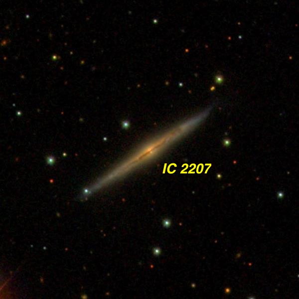
IC 2207 07 49 50.9 +33 57 44 V = 14.2; Size 2.0'x0.25'; PA = 124°
This member of the Flat Galaxy Catalogue appeared as a very faint, extremely thin ghostly streak, over 10:1 NW-SE, ~1.1'x0.1’, with a low fairly even surface brightness. It increased in length with averted vision, so the outer tips were a bit fainter. A mag 15.5 star is 30" NE of center.
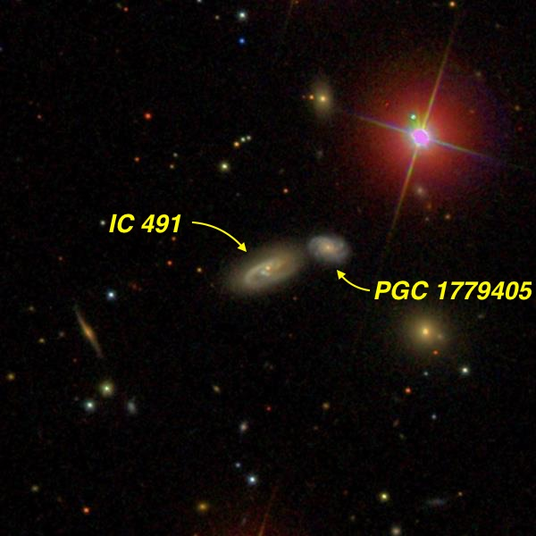
IC 491 08 03 55.0 +26 31 14 V = 14.9; Size 0.6'x0.25'; PA = 114°
I took a look at this close galaxy pair at both 260x and 520x. The brighter eastern galaxy appeared faint, small, round, 12" - 15" diameter, quasi-stellar or stellar nucleus. Situated within a N-S string of mag 9 to 10.5 star including a mag 10.2 star 1.5' NW. IC 491 forms a very close pair (non-physical) with PGC 1779405 0.5' NW. This 16th magnitude galaxy appeared extremely faint and small, 6" diameter, only occasionally pops. The nearby bright star made the detection difficult.
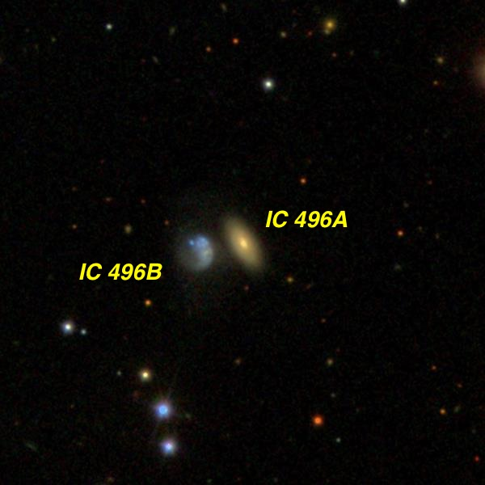
IC 496 = IC 2229 08 09 44.2 +25 52 54 V = 14.6; Size 0.55'x0.3'; PA = 30°
IC 496 was resolved into a close pair (physical), separated by just 19" E-W. The brighter western component ( IC 496A = LEDA 93095) appeared faint, very small, round, 10"-12" diameter. The fainter eastern galaxy ( IC 496B = PGC 22903) was very faint, extremely small, round, 6" diameter. An 18" pair of mag 13.5/14 stars lies 1.5' SSE. Located 7' WNW of mag 6.4 13 Cancri (K0-type).
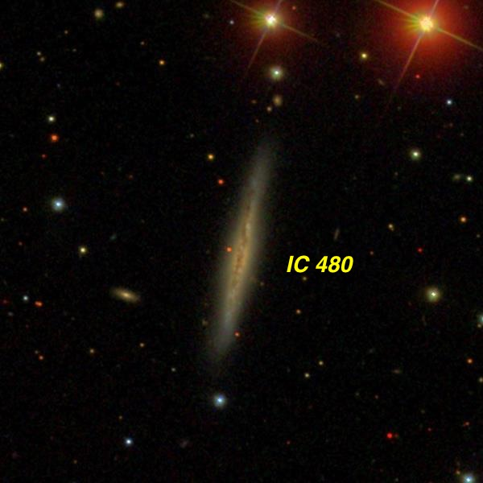
IC 480 07 55 23.2 +26 44 36 V = 14.2; Size 1.7'x0.3'; Surf Br = 13.4; PA = 168°
This edge-on appeared fairly faint, moderately large, very elongated 6:1 NNW-SSE, 0.9'x0.15', slightly brighter core. Bulges very slightly but no nucleus seen. Situated in a busy star field with a mag 15.5 star 1.2' S (collinear with the major axis). A mag 10.9 star lies 2.5' NW. This galaxy lies at a distance of ~200 million light years, which implies a true diameter of ~100,000 l.y. for the galaxy.
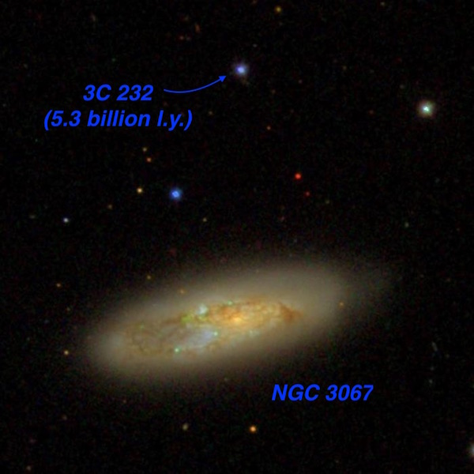
NGC 3067 09 58 21.1 +32 22 12 V = 12.1; Size 2.5'x0.9'; Surf Br = 12.8; PA = 105°
NGC 3067, about 70 million l.y. distant, appeared fairly bright, moderately large, elongated 5:2 WNW-ESE. The brighter elongated central section was mottled and appeared to have a sharp light cut-off (dust lane) on the northern flank. The eastern end of the galaxy has a lower surface brightness, probably due to dust.
3C 232 = Ton 469, a distant quasar with a redshift of z = .531 (light-travel time of 5.3 billion years), lies 1.9' due north. It was easily visible at 375x as a very faint mag 16 star. A brighter mag 15 star is 1.4' WSW of the quasar. This QSR was involved in one of Halton Arp's controversies. A neutral Hydrogen "bridge" appears to connect the quasar and NGC 3067. Arp proposed the QSR was ejected from NGC 3067, a theory which was rejected by mainstream astronomers.
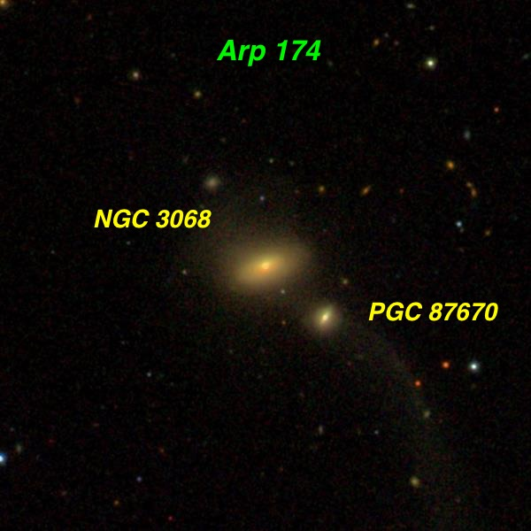
Arp 174 = NGC 3068 + PGC 87670 09 58 40.1 +28 52 39 V = 14.3; Size 1.1'x0.9'; Surf Br = 14.1
NGC 3068 is the brighter of a close, interacting pair of galaxies with PGC 87670 just 36" SE (between centers). It lies in Leo, about 290 million l.y. distant. The NGC appeared fairly faint, fairly small, contains a small bright core, ~15" diameter. The oval halo has a very low surface brightness and extends ~25"x18" E-W. The companion was extremely faint, round, only 10" diameter at most. Although I couldn't hold this compact galaxy continuously (V = 15.6), it was often visible. There was no sign of a connection between the pair or the long, diffuse tidal tail to the southwest (lower right).
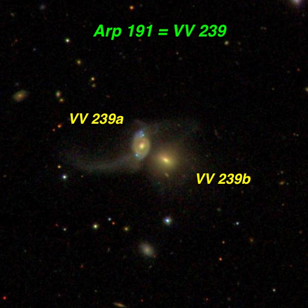
Arp 191 = VV 239 = UGC 6175 11 07 20.2 +18 25 52 Size 1.9'x1.1'
This interacting pair in Leo resides at a distance of ~375 million light years. The brighter and larger northeastern component ( VV 239a ) of Arp 191 appeared faint, small, elongated 3:2 ~N-S, 0.3'x0.2’. VV 239b , just 20" SW, appeared very faint, round, just 8" diameter. There was no sign of the tidal tail to the east of VV 239a.
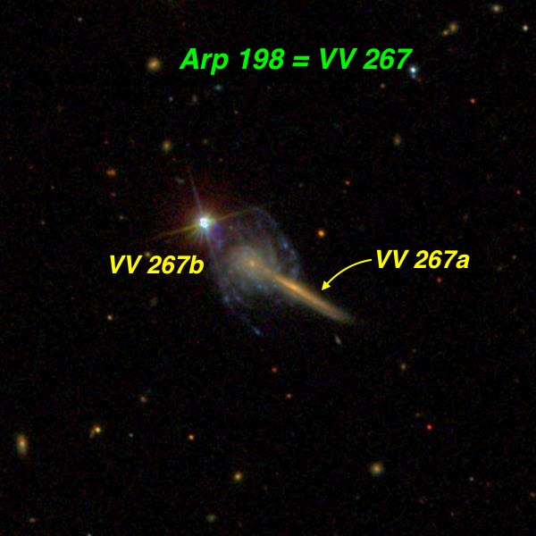
Arp 198 = VV 267 = UGC 6073 10 59 46.0 +17 39 10 Size 1.3'x0.9'
Arp 198 is an overlapping pair consisting of face-on spiral and a thin edge-on that extends right to the nucleus of the face-on. Halton Arp classified this pair under his category "Galaxies: Material ejected from Nuclei.” Clearly, he interpreted it as a face-on spiral with a jet extending to the west (right). But this SDSS image clearly reveals it as an overlapping pair very close to a star! There is no sign of distortion in VV 267a , so it is very questionable if they are currently interacting.
At 260x and 375x, the pair appeared as a very faint, fairly small, very elongated glow, ~0.4'x0.1', extending to the southwest of a mag 12.3 star. The faint glow had an unusual "spike" appearance, with a very small "knot" (core of VV 267a = UGC 6073b, the face-on spiral) at most 10" diameter at the northeast end close to the mag 12 star [28" SW of the star]. The spike or tail ( VV 267b = UGC 6073a) extends southwest with the combined glow collinear with the star!
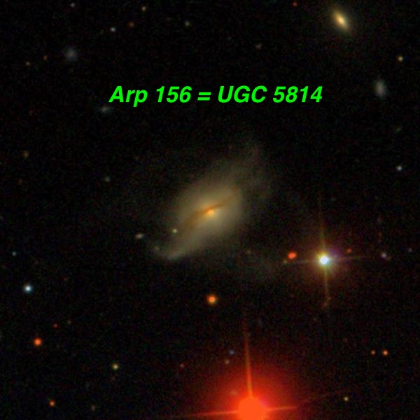
Arp 156 = UGC 5814 10 42 38.2 +77 29 42 Size 1.3'x0.8'; PA = 128°
Arp 156 is considered to be a gas-rich post-merger with a major-axis dust lane. This Draco galaxy is pretty distant at ~480 million l.y. It appeared fairly faint, moderately large, oval 4:3 or 3:2, contains a brighter core with much fainter asymmetric extensions ~40"x 30" NW-SE. The SE extension seemed cut off (due to dust?). A mag 12 star is 1.2' SW and a mag 10.7 star is 1.9' S. Also nearby is a mag 9.3 star ( SAO 7190 ) 4.4' SW and a mag 7.8 star ( HD 92319 ) 5.3' SSW. The view was significantly improved moving with these two brighter stars outside the field.
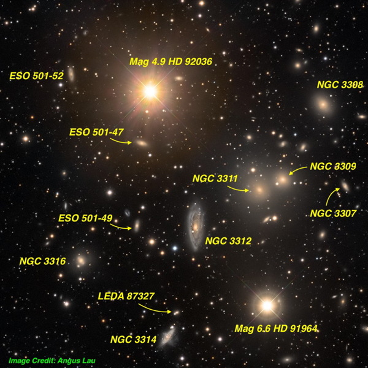
AGC 1060 = Hydra I Cluster 10 36 48 -27 32
I logged 19 galaxies in the central region of the Hydra I cluster — in preparation for an article in Sky & Telescope next year. This cluster is one of the closest fairly rich clusters to our Local Group, after the Virgo cluster, the Fornax cluster and the Antlia cluster. It has are some interesting similarities with the well-known Virgo cluster. The cluster is roughly 3 times the distance of the Virgo cluster and extends about ? the size in the sky — so both cluster have a similar linear dimension as well as a comparable number of members. Furthermore, both clusters have an giant X-ray emitting galaxy near the core — M87 in the Virgo cluster and NGC 3311 in the Hydra I cluster. Also like M87, NGC 3311 a huge number of globular clusters, estimated at ~16,000 GCs! It’s partner, NGC 3309 , is also a giant elliptical but has a normal number of globular clusters — perhaps its retinue was stolen but its larger neighbor.
The cluster surrounds a naked-eye mag 4.9 star, which makes finding the cluster pretty easy in a dark sky, but also makes viewing some of the nearby galaxies pretty tough. Although ESO 501-047 was picked up pretty easily (I had previously seen this one with a 13-inch from Costa Rica, ESO 501-052 was pretty tough and of course the bright star had to be kept out of the field. A fascinating member is NGC 3314 , near the bottom of the image above. It consists of two large spiral galaxies, which are directly overlapping! The dust lanes of the foreground galaxy are silhouette against the background spiral. Visually, though, only the brighter background galaxy is seen as the foreground galaxy has a very low surface brightness.
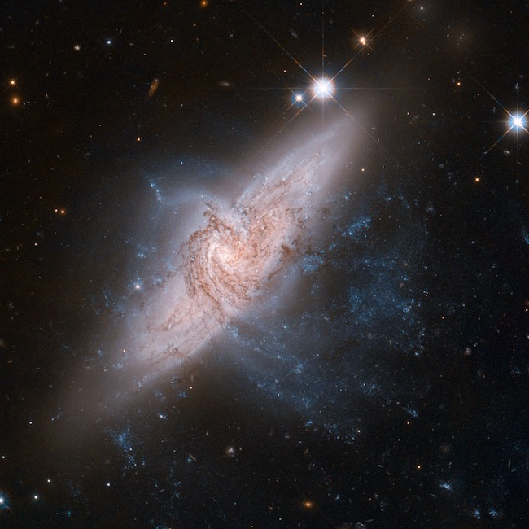